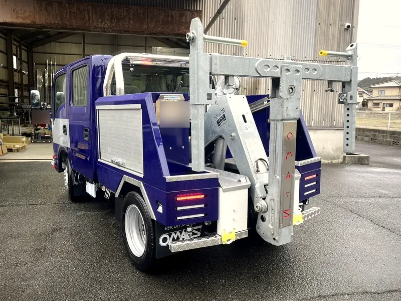
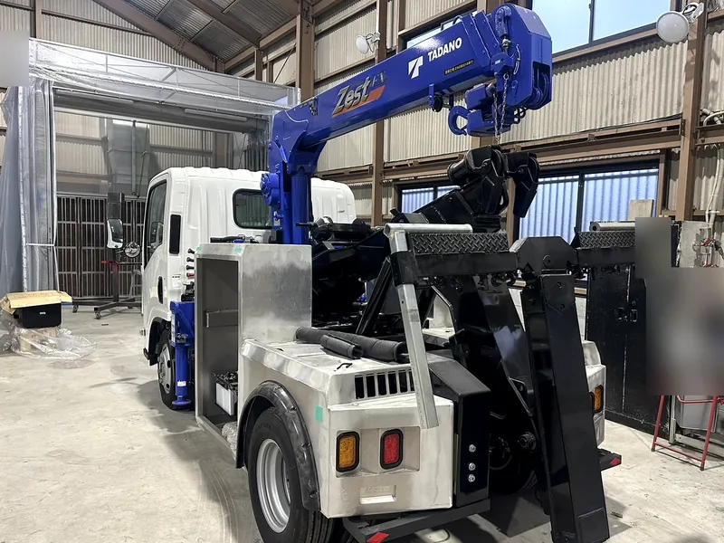

OUR STORY
作る私たちが、
毎日使っています
私たちは、福岡のレッカー・ロードサービスの会社です。
平成22年の設立から、事故や故障で動けなくなった車のもとへ出動してきました。ロードサービスは、24時間・年中無休で対応しています。
自社のロードサービスでも、自社で製作したレッカー車を使っています。
製作は、福岡県福津市にある自社の福津工場で行っています。
車を作る人と、車を使う人が、同じ会社の中にいます。


平成22年設立
レッカー・ロードサービスの会社です
自社のロードサービスで使用
自社で製作したレッカー車が、現場で働いています
自社の福津工場で製作
レッカー車の製作（架装）を、自社で行っています